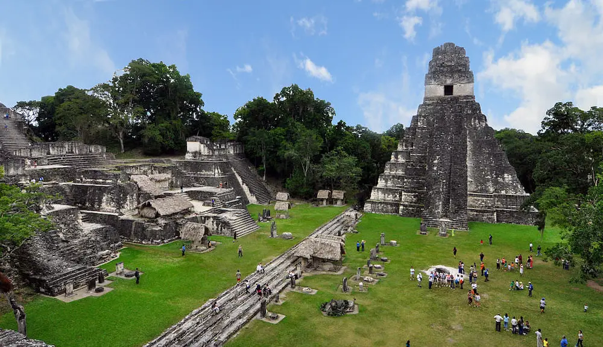
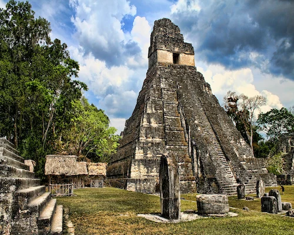
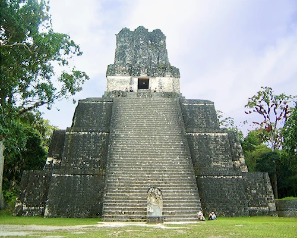
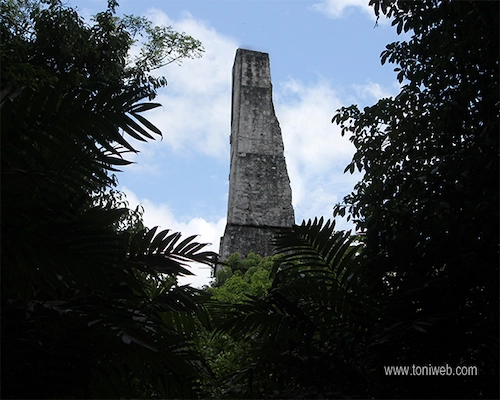

Welcome to the heart of the ancient Mayan world! Tikal, one of the most breathtaking archaeological
sites, was once a powerful city of the Maya civilization. It thrived between 200 and 900 AD, witnessing
centuries of innovation, culture, and mystery. However, recent studies suggest that Tikal may have been
inhabited as early as 600 BC, making it one of the earliest urban centers in the Americas.
Tikal was a crucial player in the complex geopolitical landscape of the Maya world. The city engaged in
both war and diplomacy with other great Mayan cities such as Calakmul and Caracol, leading to shifting
alliances and power struggles that shaped the history of the region.

The Great Plaza of Tikal, the heart of the ancient city.
Cool Facts About Tikal
🏛️ The Meaning of "Tikal"
While many believe "Tikal" means "Place of Voices" in Maya, the original name of the city was
Yax Mutal, meaning "First Mutal." The name "Tikal" was given by modern
explorers in the
19th century after hearing local legends about an ancient lost city.
🌿 A City Hidden in the Jungle
For centuries, Tikal remained hidden beneath the dense Guatemalan rainforest until its
rediscovery in the
1840s. However, many parts of the site are still covered by vegetation, and researchers using
LiDAR technology
recently discovered an extensive network of hidden roads, reservoirs, and previously unknown
buildings
buried beneath the jungle canopy.
📡 Ancient Mayan Technology
The Mayans of Tikal had an advanced water collection and storage system, allowing them to thrive
in
the rainforest. Some researchers believe they even used acoustic engineering in their temples,
as the
plazas were designed to amplify sound, enabling leaders to address thousands of people without
modern
technology.
🦜 Wildlife Meets History
Tikal is home to howler monkeys, toucans, jaguars, and over 300 bird species. As you walk
through its ruins, you'll hear the eerie calls of howler monkeys echoing through the trees. The
ancient
Maya considered many of these animals sacred and believed they served as messengers of the gods.
Iconic Temples of Tikal
Tikal’s skyline is dominated by towering pyramids, once used for ceremonies, rituals, and astronomy.
Unlike many other ancient civilizations, the Mayans did not build their pyramids all at once; instead,
they expanded them over generations, often burying older temples inside new structures.

Temple I: The Temple of the Great Jaguar, a royal tomb belonging to King Jasaw Chan
K'awiil I.

Temple IV: The tallest structure, standing at 70 meters (230 ft) high, offers
breathtaking views of the jungle canopy.

The Lost World Pyramid: Used for Mayan astronomical observations, aligning perfectly
with solstices.
The Legacy of Tikal
Tikal was a major cultural and political center of the Mayan civilization, flourishing for over a
thousand years. It was home to tens of thousands of people at its peak. However, by the 9th century,
the city was mysteriously abandoned. Some theories suggest prolonged droughts, resource depletion,
or internal conflicts may have led to its downfall.
Today, Tikal remains one of the most visited and studied archaeological sites in the world. Its
influence can still be seen in modern Mayan communities, who continue to honor the traditions and
knowledge passed down through generations.
"Tikal is a place where the past speaks through the ruins, and the jungle breathes life into history."